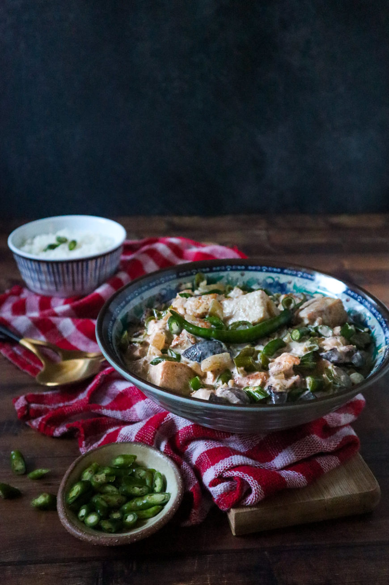

<!DOCTYPE html>
<html lang="en">
<head>
    <meta charset="UTF-8">
    <meta http-equiv="X-UA-Compatible" content="IE=edge">
    <meta name="viewport" content="width=device-width, initial-scale=1.0">
    <title>Vegan Bicol Express</title>
    <link rel="stylesheet" href="../styles.css">
</html>
    <body>
        <div class-="content">
         <div><a href="../index.html"class="btn">Bahay(home)</a></div>
            <h1>Vegan Bicol Express</h1>
            <div class="section">
                
            </div>
            <h3>Description</h3>
            <div class="section">
                <p>
                    Bicol Express is a spicy coconut stew traditionally made with pork,  
                hot chili peppers, and coconut milk. The term Bicol comes from a region 
                in the Philippines (located in the southern part of Luzon). The name, 
                Bicol Express, was after a passenger train service. Natively, the dish is also known as sinilihan 
                which means “spiced with chili”.
                </p>
            </div>
            <h3>Ingredients:</h3>
            <div class="section">
                <ul>
                    <li>1 block (14oz) extra firm tofu pressed & pat dry</li>
                    <li>5 pcs sliced hot green chili Thai chili, Serrano pepper, green Labuyo chili, or jalapeño</li>
                    <li>4 cloves garlic finely minced</li>
                    <li>½ cup shiitake mushroom roughly chopped (see notes)</li>
                    <li>1 tsp ginger finely minced</li>
                    <li>½ medium yellow or white onion diced</li>
                    <li>1 tsp garlic powder</li>
                    <li>1 tsp onion powder</li>
                    <li>salt & pepper to taste</li>
                    <li>2 cups (1 can) full fat coconut milk</li>
                    <li>1 ½ cup water </li>
                    <li>1 tsp Better Than Buillon Vegetable Base (see notes)</li>
                    <li>2 tsp low sodium tamari or low sodium soy sauce</li>
                    <li>1 tbsp extra virgin olive oil</li>
                    <li>1 tsp lemon juice</li>
                </ul>
            </div>
            <h3>Steps:</h3>
            <div class="section">
                <ol>
                    <li>In a small sauce bowl, pour ½ cup of water. Add the teaspoon of the vegetable paste and whisk to dissolve. Set aside until later use.</li>
                    <li>Preheat a sauté skillet (or cast iron) to medium high heat. Coat with a tablespoon of any neutral flavored oil.</li>
                    <li>Prepare the tofu. Carefully press out the excess liquid without tearing (or breaking) the block. Slice into bite-sized cubes and pat dry. Season on each side with a sprinkle of salt & pepper.</li>
                    <li>Sear the tofu on each side until it is golden brown; just to give it color and more texture. Remove from the pan and set aside.</li>
                    <li>Using the same skillet: toss the onions, ginger, sliced green chilis, and mushrooms to sauté. Sauté for 1-2 minutes or until it is fragrant. Add the garlic and mix. Leave alone for another minute until garlic is slightly golden.</li>
                    <li>Lower down the heat to medium low. Toss the tofu back into the skillet and mix. Pour the vegetable based liquid into the skillet and stir. Add the coconut milk, stir, and cover with a lid to simmer for 3-5 minutes.</li>
                    <li>Remove the lid. Splash low sodium tamari (or low sodium soy sauce) to the broth. Season with onion and garlic powder. Stir and let it simmer, one more time, for about 5 minutes with the lid on. Turn off heat. Drizzle with a tablespoon of olive oil and a hint of lemon juice to finish.</li>
                    <li>Serve with a bed of rice and garnish a whole green chili to eat.</li>
                </ol>
            </div>
        </div>
    </body>
</html>